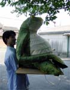
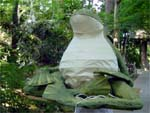
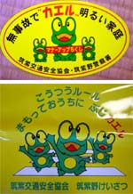
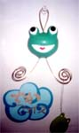
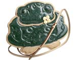
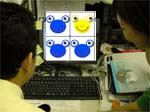
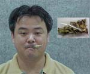
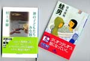

|
 カエル大明神カエル寺に帰る！ 【福岡発福岡かえる展４実行委員会】かえる展４開催期間中に、会場にお招きしていた『かえる大明神』が、無事に、小郡市横隈のかえる寺『如意輪寺』のカエル座敷きに帰還しました。蓮かえる実行委員長に抱えられた、かえる大明神は、新緑美しい寺の境内の中を進み、途中、お子さまから『あああああ！かえるだあああああ！』という歓迎の声をあびつつ、無事に定位置の、座敷きに鎮座いたしまいた。 今年もあるがとうございましたあああああああっ！
筑紫野交通安全協会が全小学１年生にカエルセット配る！ 【日本三大カエル名所『かえる寺』住職同志記者】寺の隣り町の筑紫野市は、今年、『交通安全無事カエル』を全校の新一年生に配付したそうです。ランドセルにつける黄色の、カバーとか、『無事故でカエル明るい家庭』や『交通ルール守って、おうちに無事カエル』シールなどのテンコ盛り７点セットなのです。カエルは、無事に帰宅することができるありがたい縁起ものなので、筑紫野市の児童は、きっと無事故で６年間を過ごすことでありましょう。 なお、筑紫野市以外の児童も、このランドセルカバーをつけて歩けば、危険がきかずいてこないことうけあいであります。
筑紫野交通安全協会カエルセットをプレゼント！今スグ！メールを！【全国かえる奉賛会】小学生を子にもつ母親３人に、この『筑紫野市無事カエル』のランドセルカバーセットを先着３人にプレゼントします。わが子に、装着する姿をデジカメや通常カメラでレポートしてくれたら、うれしいぞーっ！応募を待つ！今すぐに応募メールをくれい！小学生ではないが『あたしがランドセルしょって、つけてみるーーーっ』と頑張るなら、大人でも可なり。 応募はこちらに！大王様へのメールwakuro-3@hf.rim.or.jp  大阪でもカエル展！【大阪発まりべ同志記者】かえる好きなイラストレータです。今回、大阪府藤井寺北岡にある『ゆめいろミュージアム』で開催中の『アート水族館＆かえる展』に、作品を出展しています。ぜひぜひみにきてね！各地でカエル展開催中！あまガエルファンは１９日に国営国策放送の番組を！【江戸発まさえ同志記者】都内で開催されてた「カエル展」に３つほど行きました。６月になってますますカエルな企画がいっぱいですね。企画ではないんですけど、カエルな情報を入手しましたのでお知らせします。 NHK教育テレビ６月１９日 午前9時15分から放送する「しぜんとあそぼ」は「あまがえる」です。 ６月５日にも放送してまして、見ました。おたまじゃくしからカエルに変身していく様子を撮影してます。ぜひ、あまがえるファンは録画して永久保存にしてください！(笑) 小学館から発行されてる「週刊日本の天然記念物」の第７号が「モリアオガエル」だということが判明！この本には、チョコエッグでおなじみになちゃった海洋堂さんのフィギアがついてます。第７号「モリアオガエル」は７月１８日(木)発売！今から要チェックなのだ！ ヴィトンにカエルバッグ！ 【福岡発走るかえるリョーコ同志記者】ヴィトンからカエルデザインのバッグが出ました。緑色で、カエルの複雑なデザインを再現しています。でも、これってフランス限定販売らしい。 カエラーを彼女に持つ、全国の男性は、いますぐにフランスに飛び立ち、現地でカエルバッグ購入して彼女にプレゼントしましょーっ！
【全国かえる奉賛会】海外ブランドの攻勢で、モリハナエでさえ苦戦しているというのに、カエルデザインで先を越されては、国内ブランドも、大打撃である。手後れになるまえに、トノサマカエル模様の、かえるバッグを発売して対抗しようではないかあああああ
カエルオセロで熱くなれーっ！ 【福岡発コアラの吉松様】コアラの吉松です。ここにある蛙のオセロゲームは、かっても負けてもカエルが勝利するので、とっても幸福です。ツクダオリジナルなのでしょうか。オセロの公式版になるとうれしいですよね。
インドネシアはカエルチップス！ 【旧オランダ領東印度発（ポルトガル領東印度を除く）俊春様】製品の名前 KRIPIK KATAK（クリピックカタ）＝蛙チップ価格 １袋 RP.1,500.= +/- JPY.20. （日本円で２０円位）インドネシアの賃金からすればかなり高価であるが、もっとも路上駐車が一回 Rp.1,000. (日本円で１３円位）１日の最低賃金が Rp.5,000.（日本円６５円位）価格の比較は何を比べるかで異なるので難しいが、まあ、私の昼飯が通常 Rp.10,000.00 （日本円で１３０円位）で価格を想像してくれ、缶入りコカコーラがRp.3,000.（日本円で６０円）味は生臭くも無く食えるが、塩味が薄いので塩をかけると割と旨い。蛙は中国では下手物では無く、常食です。本来はイスラム教では蛙を食する事は禁じられていますが、インドネシアのイスラムは本当に大らかで多くのインドネシア人も食べておりますが、恐らくは中国人の食習慣かと思います。
【全国かえる奉賛会】ぐえーっ！カエルが常食だってええええええ。日本人も昆虫みたいな海老が大好きときているから、まあ、世間が変わればそういうこともあるだろうけど。。。やっぱ、やだよねーっ
２足歩行のカエル、がんばる！ 【東京発きーちゃん様】最近私は本屋で本を4000円程衝動買いしてしまったのですが、その中の２冊に奇しくも２足歩行のカエルが登場しています。 まず、「蛙男」という本…。これは幻冬舎文庫から出ている清水義範さんの長編小説で、グラフィックデザイナーがある日突然蛙化してしまう…というお話です。清水義範さんの小説を読んだ方は「また、笑える話かな？」と思うかもしれませんが、このお話のエンディングは結構シビアです。別にカエル好きではない男性が、蛙化していく自分の全身に恐怖を感じながらも、徐々に「それもまた良し」と思い始める所が、ちょっと好感が持てます。 もう１冊は新潮社文庫の「神の子どもたちはみな踊る」という、村上春樹さんの短編集です。 この短編集の中に「かえるくん、東京を救う」というお話があります。こちらは大地震を寸前でくい止め、大災害から東京を救う人間大の２足歩行のかえるくんが登場します。勇敢で男気溢れるかえるくんに感動です。
「かえるくん、東京を救う」の他の短編中と、「蛙男」の一部には、未成年者には好ましくないシーンの描写が含まれているので、夏休みの推薦図書に出来ないのが残念ですが、大人の方にはお奨めです。
投稿採用者に武功カエル徽章を授与！ |

かえる古新聞過去に取り上げた記事を見出し付きで一覧したい人は、ここをクリック◆創刊号を見る◆先週号を見る◆話題の号を見る◆かえる新聞の昔を読む
|
私も入っています。。全国かえる奉賛会
大王様に会うには、このバナーをクリック。ずっと奥に写真館があるぞ。全国かえる奉賛会に入会するには、自分のホームページのどこかに、下の部分を追加するとバナーがリンク付きで表示されるぞ。どんどん入会しましょー |


|